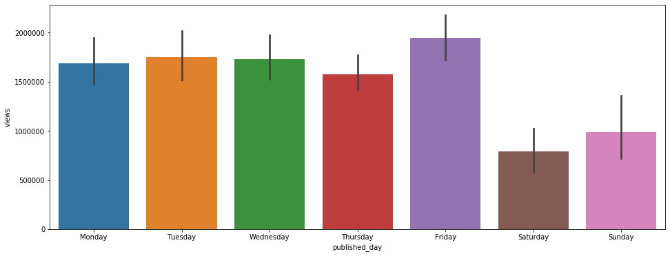
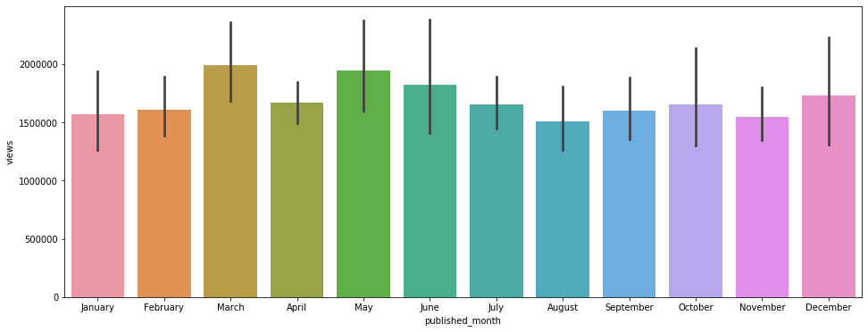

TED Talk Viral Predictor
import pandas as pd
import numpy as np
from sklearn_pandas import DataFrameMapper, CategoricalImputer
from sklearn.model_selection import train_test_split
from sklearn.preprocessing import StandardScaler, LabelEncoder, LabelBinarizer, LabelEncoder
from sklearn.impute import SimpleImputer
from sklearn.linear_model import Lasso, LogisticRegression
from sklearn.pipeline import make_pipeline, Pipeline
from sklearn.feature_extraction.text import CountVectorizer
import pickle
import datetime
import seaborn as sns
import matplotlib.pyplot as plt
%matplotlib inline
df = pd.read_csv('data/ted_main.csv')
df.isnull().sum()
comments 0
description 0
duration 0
event 0
film_date 0
languages 0
main_speaker 0
name 0
num_speaker 0
published_date 0
ratings 0
related_talks 0
speaker_occupation 6
tags 0
title 0
url 0
views 0
dtype: int64
# Drop null
df.dropna()
df.head(3)
| comments | description | duration | event | film_date | languages | main_speaker | name | num_speaker | published_date | ratings | related_talks | speaker_occupation | tags | title | url | views | |
|---|---|---|---|---|---|---|---|---|---|---|---|---|---|---|---|---|---|
| 0 | 4553 | Sir Ken Robinson makes an entertaining and pro... | 1164 | TED2006 | 1140825600 | 60 | Ken Robinson | Ken Robinson: Do schools kill creativity? | 1 | 1151367060 | [{'id': 7, 'name': 'Funny', 'count': 19645}, {... | [{'id': 865, 'hero': 'https://pe.tedcdn.com/im... | Author/educator | ['children', 'creativity', 'culture', 'dance',... | Do schools kill creativity? | https://www.ted.com/talks/ken_robinson_says_sc... | 47227110 |
| 1 | 265 | With the same humor and humanity he exuded in ... | 977 | TED2006 | 1140825600 | 43 | Al Gore | Al Gore: Averting the climate crisis | 1 | 1151367060 | [{'id': 7, 'name': 'Funny', 'count': 544}, {'i... | [{'id': 243, 'hero': 'https://pe.tedcdn.com/im... | Climate advocate | ['alternative energy', 'cars', 'climate change... | Averting the climate crisis | https://www.ted.com/talks/al_gore_on_averting_... | 3200520 |
| 2 | 124 | New York Times columnist David Pogue takes aim... | 1286 | TED2006 | 1140739200 | 26 | David Pogue | David Pogue: Simplicity sells | 1 | 1151367060 | [{'id': 7, 'name': 'Funny', 'count': 964}, {'i... | [{'id': 1725, 'hero': 'https://pe.tedcdn.com/i... | Technology columnist | ['computers', 'entertainment', 'interface desi... | Simplicity sells | https://www.ted.com/talks/david_pogue_says_sim... | 1636292 |
df.info()
<class 'pandas.core.frame.DataFrame'>
RangeIndex: 2550 entries, 0 to 2549
Data columns (total 17 columns):
comments 2550 non-null int64
description 2550 non-null object
duration 2550 non-null int64
event 2550 non-null object
film_date 2550 non-null int64
languages 2550 non-null int64
main_speaker 2550 non-null object
name 2550 non-null object
num_speaker 2550 non-null int64
published_date 2550 non-null int64
ratings 2550 non-null object
related_talks 2550 non-null object
speaker_occupation 2544 non-null object
tags 2550 non-null object
title 2550 non-null object
url 2550 non-null object
views 2550 non-null int64
dtypes: int64(7), object(10)
memory usage: 338.8+ KB
# Using median of views as a marker for video virality
median = (np.median(df['views']))
median
df['view'] = df.apply(lambda x: 1 if x['views'] > median else 0, axis=1)
df.head()
| comments | description | duration | event | film_date | languages | main_speaker | name | num_speaker | published_date | ratings | related_talks | speaker_occupation | tags | title | url | views | view | |
|---|---|---|---|---|---|---|---|---|---|---|---|---|---|---|---|---|---|---|
| 0 | 4553 | Sir Ken Robinson makes an entertaining and pro... | 1164 | TED2006 | 1140825600 | 60 | Ken Robinson | Ken Robinson: Do schools kill creativity? | 1 | 1151367060 | [{'id': 7, 'name': 'Funny', 'count': 19645}, {... | [{'id': 865, 'hero': 'https://pe.tedcdn.com/im... | Author/educator | ['children', 'creativity', 'culture', 'dance',... | Do schools kill creativity? | https://www.ted.com/talks/ken_robinson_says_sc... | 47227110 | 1 |
| 1 | 265 | With the same humor and humanity he exuded in ... | 977 | TED2006 | 1140825600 | 43 | Al Gore | Al Gore: Averting the climate crisis | 1 | 1151367060 | [{'id': 7, 'name': 'Funny', 'count': 544}, {'i... | [{'id': 243, 'hero': 'https://pe.tedcdn.com/im... | Climate advocate | ['alternative energy', 'cars', 'climate change... | Averting the climate crisis | https://www.ted.com/talks/al_gore_on_averting_... | 3200520 | 1 |
| 2 | 124 | New York Times columnist David Pogue takes aim... | 1286 | TED2006 | 1140739200 | 26 | David Pogue | David Pogue: Simplicity sells | 1 | 1151367060 | [{'id': 7, 'name': 'Funny', 'count': 964}, {'i... | [{'id': 1725, 'hero': 'https://pe.tedcdn.com/i... | Technology columnist | ['computers', 'entertainment', 'interface desi... | Simplicity sells | https://www.ted.com/talks/david_pogue_says_sim... | 1636292 | 1 |
| 3 | 200 | In an emotionally charged talk, MacArthur-winn... | 1116 | TED2006 | 1140912000 | 35 | Majora Carter | Majora Carter: Greening the ghetto | 1 | 1151367060 | [{'id': 3, 'name': 'Courageous', 'count': 760}... | [{'id': 1041, 'hero': 'https://pe.tedcdn.com/i... | Activist for environmental justice | ['MacArthur grant', 'activism', 'business', 'c... | Greening the ghetto | https://www.ted.com/talks/majora_carter_s_tale... | 1697550 | 1 |
| 4 | 593 | You've never seen data presented like this. Wi... | 1190 | TED2006 | 1140566400 | 48 | Hans Rosling | Hans Rosling: The best stats you've ever seen | 1 | 1151440680 | [{'id': 9, 'name': 'Ingenious', 'count': 3202}... | [{'id': 2056, 'hero': 'https://pe.tedcdn.com/i... | Global health expert; data visionary | ['Africa', 'Asia', 'Google', 'demo', 'economic... | The best stats you've ever seen | https://www.ted.com/talks/hans_rosling_shows_t... | 12005869 | 1 |
df['clean_date'] = df['published_date'].apply(lambda x: datetime.datetime.utcfromtimestamp(x).date())
df['clean_date'] = pd.to_datetime(df['clean_date'])
df['published_day'] = [d.day_name() for d in df['clean_date']]
df['published_month'] = [d.month_name() for d in df['clean_date']]
plt.figure(figsize=(16, 6))
sns.barplot(x= 'published_day', y='views', data=df, order=['Monday', 'Tuesday', 'Wednesday', 'Thursday', 'Friday', 'Saturday', 'Sunday']);

plt.figure(figsize=(16, 6))
sns.barplot(x='published_month', y='views', data=df, order=['January', 'February', 'March', 'April', 'May', 'June', 'July', 'August', 'September', 'October', 'November', 'December']);

df.columns
Index(['comments', 'description', 'duration', 'event', 'film_date',
'languages', 'main_speaker', 'name', 'num_speaker', 'published_date',
'ratings', 'related_talks', 'speaker_occupation', 'tags', 'title',
'url', 'views', 'view', 'clean_date', 'published_day',
'published_month'],
dtype='object')
X = df[['description', 'duration', 'languages', 'published_day', 'published_month', 'tags', 'title']]
y = df['view']
X_train, X_test, y_train, y_test = train_test_split(X, y, test_size = 0.33, random_state=42)
from sklearn.feature_extraction.text import TfidfVectorizer
mapper = DataFrameMapper([('description',[TfidfVectorizer(stop_words='english')]),
(['duration'], StandardScaler()),
(['languages'],StandardScaler()),
(['published_day'],LabelBinarizer()),
(['published_month'],LabelBinarizer()),
('tags',[TfidfVectorizer(stop_words='english')]),
('title',[TfidfVectorizer(stop_words='english')])], df_out=True)
mapper.fit(X_train)
DataFrameMapper(default=False, df_out=True,
features=[('description',
[TfidfVectorizer(analyzer='word', binary=False,
decode_error='strict',
dtype=<class 'numpy.float64'>,
encoding='utf-8', input='content',
lowercase=True, max_df=1.0,
max_features=None, min_df=1,
ngram_range=(1, 1), norm='l2',
preprocessor=None, smooth_idf=True,
stop_words='english',
strip_accents=Non...
decode_error='strict',
dtype=<class 'numpy.float64'>,
encoding='utf-8', input='content',
lowercase=True, max_df=1.0,
max_features=None, min_df=1,
ngram_range=(1, 1), norm='l2',
preprocessor=None, smooth_idf=True,
stop_words='english',
strip_accents=None,
sublinear_tf=False,
token_pattern='(?u)\\b\\w\\w+\\b',
tokenizer=None, use_idf=True,
vocabulary=None)])],
input_df=False, sparse=False)
Z_train = mapper.fit_transform(X_train)
Z_test = mapper.transform(X_test)
Z_train.head()
| description_000 | description_05049 | description_08 | description_10 | description_100 | description_1000 | description_100mph | description_10x | description_11 | description_110 | ... | title_young | title_youth | title_youtube | title_yup | title_zap | title_zero | title_zika | title_zodiac | title_zone | title_zulu | |
|---|---|---|---|---|---|---|---|---|---|---|---|---|---|---|---|---|---|---|---|---|---|
| 591 | 0.0 | 0.0 | 0.0 | 0.000000 | 0.0 | 0.0 | 0.0 | 0.0 | 0.0 | 0.0 | ... | 0.0 | 0.0 | 0.0 | 0.0 | 0.0 | 0.0 | 0.0 | 0.0 | 0.0 | 0.0 |
| 462 | 0.0 | 0.0 | 0.0 | 0.000000 | 0.0 | 0.0 | 0.0 | 0.0 | 0.0 | 0.0 | ... | 0.0 | 0.0 | 0.0 | 0.0 | 0.0 | 0.0 | 0.0 | 0.0 | 0.0 | 0.0 |
| 1036 | 0.0 | 0.0 | 0.0 | 0.153945 | 0.0 | 0.0 | 0.0 | 0.0 | 0.0 | 0.0 | ... | 0.0 | 0.0 | 0.0 | 0.0 | 0.0 | 0.0 | 0.0 | 0.0 | 0.0 | 0.0 |
| 45 | 0.0 | 0.0 | 0.0 | 0.000000 | 0.0 | 0.0 | 0.0 | 0.0 | 0.0 | 0.0 | ... | 0.0 | 0.0 | 0.0 | 0.0 | 0.0 | 0.0 | 0.0 | 0.0 | 0.0 | 0.0 |
| 1268 | 0.0 | 0.0 | 0.0 | 0.000000 | 0.0 | 0.0 | 0.0 | 0.0 | 0.0 | 0.0 | ... | 0.0 | 0.0 | 0.0 | 0.0 | 0.0 | 0.0 | 0.0 | 0.0 | 0.0 | 0.0 |
5 rows × 15296 columns
log_model = LogisticRegression(solver="liblinear")
log_model.fit(Z_train, y_train)
# y_pred = model.predict(Z_test)
# print(accuracy_score(y_test, y_pred))
LogisticRegression(C=1.0, class_weight=None, dual=False, fit_intercept=True,
intercept_scaling=1, l1_ratio=None, max_iter=100,
multi_class='warn', n_jobs=None, penalty='l2',
random_state=None, solver='liblinear', tol=0.0001, verbose=0,
warm_start=False)
print(log_model.score(Z_train, y_train))
print(log_model.score(Z_test, y_test))
0.9549180327868853
0.7292161520190024
import catboost as cb
model = cb.CatBoostClassifier()
Catboost model
from catboost import CatBoostClassifier
model = CatBoostClassifier(early_stopping_rounds= 20,
iterations=100,
random_seed=42,
learning_rate=0.5,
custom_loss=['AUC', 'Accuracy']
)
model.fit(
Z_train, y_train,
eval_set=(Z_test, y_test),
verbose=False,
)
<catboost.core.CatBoostClassifier at 0x7feb2452dda0>
model.best_score_
{'learn': {'Accuracy': 0.8905152224824356, 'Logloss': 0.346167848570717},
'validation': {'Accuracy': 0.6793349168646081,
'Logloss': 0.5950624788419,
'AUC': 0.7483211207262959}}
from sklearn.model_selection import GridSearchCV
log_reg_params = {
'penalty' : ['l1', 'l2'],
'C': [0.1, 0.5, 1.0, 5, 10],
'random_state' : [42]
}
gs_log_reg=GridSearchCV(LogisticRegression(solver="liblinear"),param_grid = log_reg_params, cv = 5)
gs_log_reg.fit(Z_train, y_train)
GridSearchCV(cv=5, error_score='raise-deprecating',
estimator=LogisticRegression(C=1.0, class_weight=None, dual=False,
fit_intercept=True,
intercept_scaling=1, l1_ratio=None,
max_iter=100, multi_class='warn',
n_jobs=None, penalty='l2',
random_state=None, solver='liblinear',
tol=0.0001, verbose=0,
warm_start=False),
iid='warn', n_jobs=None,
param_grid={'C': [0.1, 0.5, 1.0, 5, 10], 'penalty': ['l1', 'l2'],
'random_state': [42]},
pre_dispatch='2*n_jobs', refit=True, return_train_score=False,
scoring=None, verbose=0)
best_est = gs_log_reg.best_estimator_
# Save the model into a pickle file for Flask app
pipe = make_pipeline(mapper, best_est)
pipe.fit(X_train, y_train)
pipe.score(X_test, y_test)
pickle.dump(pipe, open('pipe.pkl', 'wb'))